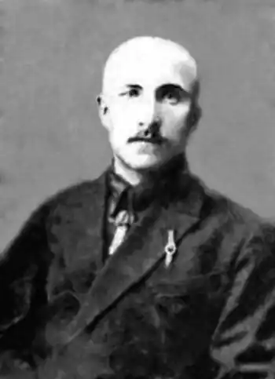

Народився 26.05.1902 р. в с. Василівка на Хмельниччині. У 1919 р. був одним з засновників юнацької спілки, що діяла під орудою УСДРП, та партії соціалістів-самостійників. Закінчив у 1920 р. Вінницьку українську гімназію, яка сформувала його національні погляди.
Вчителював у селах. У 1924–1926 рр. служив у армії, з 1926-го працював інструктором образотворчих мистецтв у Вінницькій трудовій школі та завідувачем художнього відділу історично-побутового музею (1926–1933). У 1930 р. склав екстерном екзамени на літературно-лінгвістичному відділі Інституту профосвіти у Харкові. З 1932-го працює в інституті соцвиху у Вінниці.
Перші вірші опублікував у 1918 р. в кам'янецьких часописах "Село", "Україна", "Шлях" та вінницьких "Республіканських Вістях". Пізніше ці антимосковські публікації йому згадають слідчі на допитах. У вінницькому літературному збірнику "Струмінь" були надруковані переклади Нарушевича з польської, а згодом він друкувався у газеті "Червоний Край" (Вінниця) та в журналах "Нова Громада", "Молодий Більшовик", "Плужанин". Протягом 1925–1927 рр. М. Нарушевич опублікував книжку про Вінницю, три оповідання в журналах "Культура і Побут" та "Молодий Більшовик" і сім віршів. 19.07.1933 рр. його заарештували. На міській партконференції поета розкритикували за "прояви українського шовінізму" і назвали "одним з ватажків" контрреволюційної організації. 27. 10. 1933 р. його засудили на 10 років таборів. Про перебування Нарушевича на Соловках згадує С. Підгайний в книзі "Українська інтелігенція на Соловках": "Якийсь час Нарушевич перебував у Біломорсько-Балтійському таборі, куди хтось із його родичів привіз йому сина Льонка, бо дружина кудись зникла. Уперше, мабуть, Соловецька тюрма побачила не тільки батька-в'язня, а й сина – не в'язня на становищі ув'язненого. Льонок жив разом з татом в одній камері і був предметом уваги всієї соловецької громади. Найбільшими друзями Льонка були Микола Зеров і Олекса Слісаренко, які не тільки провадили з хлопцем всілякі розмови, а й брали участь у різних іграх, які вигадував Льонок… Так цей в'язень добув на острові до червня 1937 р., а потім його відправлено з острова, уже без батька, невідомо куди. Батько працював на сільськогосподарських роботах і дуже переживав розлуку з сином". "Особой тройкой УНКВД ЛО 25.11.1937 г. приговорен по ст. 58-10-11 УК РСФСР к высшей мере наказания. Расстрелян в г. Ленинград 8.12.1937".